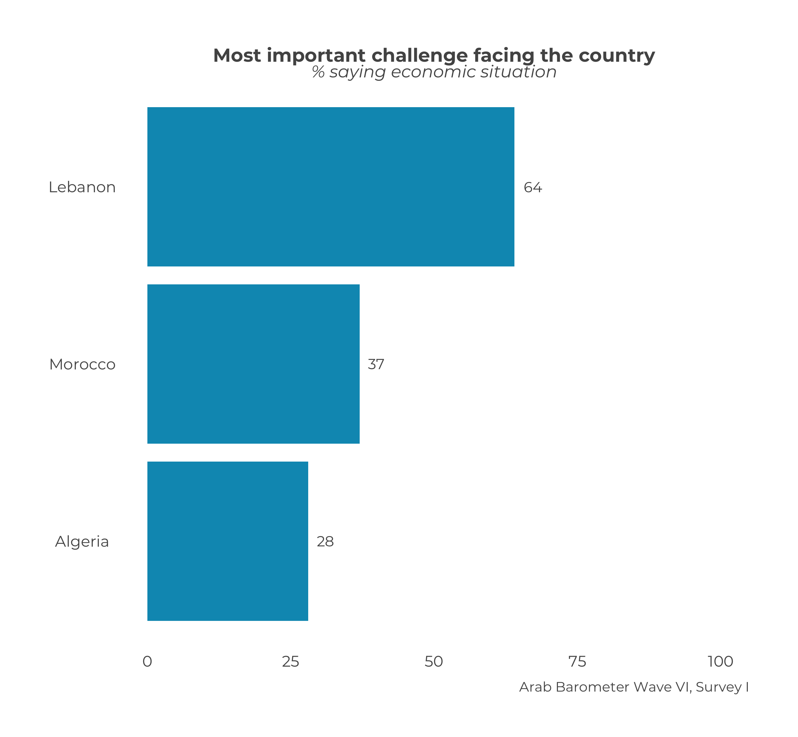

Chapter 3 Comparative Overall Graphs
This chapter will cover how to make a comparative frequency graph for multiple countries.
3.1 Create a Single Graph
This section will go over how to make a one-off comparative frequency graph for a multiple countries.
At the end, your code will look like the following:
survey1 %>%
calculate_smry_comp("Q1COVID19") %>%
plot_smry_comp(.caption = "Arab Barometer Wave VI, Survey I")That code will produce the following graph:

3.1.1 Create a Summary
The process of creating an overall comparative graph is intentionally similar to creating a overall individual graph. As always, the first step is to organize the data we want to graph. For this we use the function calculate_smry_comp(), which is the comparative version of the individual summary function. The function requires only two parameters: (1) the data you are using, and (2) the variable you want to summarize. There are several other optional parameters. To see all the input parameters for the function, type the code ?calculate_smry_comp in your R console.
For the example in this section, we are using the data set survey1 and summarizing the variable Q1COVID19.
calculate_smry_comp(
.data = survey1, # The data you are using
.var = "Q1COVID19" # The variable you want to plot
)Recall the above code is the same as typing:
survey1 %>%
calculate_smry_comp("Q1COVID19")Let’s take a look at the output:
## # A tibble: 6 x 2
## Country Q1COVID19
## <labelled> <dbl>
## 1 Algeria 72
## 2 Jordan 61
## 3 Lebanon 82
## 4 Libya 75
## 5 Morocco 65
## 6 Tunisia 59A few things to notice about the output of this function:
- The first column is called
Country. This will always be the case. The plot function used for comparative summaries will expect this. - The second column is named after the question being summarized. This will always be the case. The plot function used for comparative summaries will expect this. The title of the graph will depend on the name of this column.
If you wish to provide the plot function your own summary, it will have to follow these conventions.
Now we’ll store the summary as an object comparative_summary and move on to plotting it.
comparative_summary <- survey1 %>%
calculate_smry_comp("Q1COVID19")3.1.2 Plot the Summary
The next step is plot the summary we just created. To do this, we use the function plot_smry_comp(). You can learn more about this function in section 7.3 of the ArabBarometR Guide.
There is only one necessary parameter to use plot_smry_comp(): the summary data frame. For a complete list of acceptable parameters and documentation, you can run ?plot_smry_comp in your R console.
Now, we can plug our summary into the plot function:
plot_smry_comp(
.df = comparative_summary # The summary data frame
)The above code is the same as:
comparative_summary %>%
plot_smry_comp()Which is the SAME as:
survey1 %>%
calculate_smry_comp("Q1COVID19") %>%
plot_smry_comp()We can do this because comparative_summary is equal to survey1 %>% calculate_smry_comp("Q1COVID19").
Any of the above code gives the following graph:
Almost done! Notice how the caption says Arab Barometer Wave N (DATE)? Let’s change that.
survey1 %>%
calculate_smry_comp("Q1COVID19") %>%
plot_smry_comp(
.caption = "Arab Barometer Wave VI, Survey I" # NEW caption
)Now we have the plot we started with! We’re done!

3.2 Create Many Graphs
As a rule of thumb in programming, if you can create something one time, you can create it a bajillion times. This is good because for each wave, Arab Barometer needs approximately a bajillion graphs.
To create many graphs at once, there are three steps to follow.
- First, identify the variables to plot.
- Second, create summaries of those variables.
- Third, plot those summaries.
At the end of this section, your code will look like the following:
#.....................Identify the variables.....................
variables_2_plot <- list("Q1COVID19",
"Q2061A",
"Q609")
names(variables_2_plot) <- c("Q1COVID19",
"Q2061A",
"Q609")
#......................Create the summaries......................
summaries <- survey1 %>%
calculate_smry_comp(variables_2_plot)
#.......................Plot the summaries.......................
plots <- map(summaries,
plot_smry_comp,
.caption = "Arab Barometer Wave VI, Survey I")The result is a named list of plots. Each element in the list is a plot. The element is named for the variable it is a plot of.
For example, to see the plot for variable Q1COVID19, run the following code:
comparative_plots$Q1COVID19To see the plot for variable Q2061A, run the following code:
comparative_plots$Q2061A
Finally, to see the plot for variable Q609, run the following code:
comparative_plots$Q609That’s it! The only limit on the number of graphs you can create at once is the time it will take R to make them. The more graphs you try to create at once, the longer it will take.
Let’s begin.
3.2.1 Identify the Variables
When creating many graphs, you need to tell R which variables you want to make plots of. This is true for when you want to create a single graph as well, but it is much more strongly implied. Plus, the variables must be identified in a specific way.
To create many summaries at once, you need to provide your variables in a named list. To create a named list, first make a list of the variables you want to plot.
variables_2_plot <- list("Q1COVID19",
"Q2061A",
"Q609")The next step is to name your list.
names(variables_2_plot) <- c("Q1COVID19",
"Q2061A",
"Q609")Now, you have a named list of variables. Time to summarize them.
3.2.2 Create Summaries
The same function used to create a single summary is used to create many summaries: calculate_smry_comp(). Recall it takes three parameters: (1) the data you are using, and (2) the variable(s) you want to plot. Now, instead of one variable, you supply the list of variables.
calculate_smry_comp(
.data = survey1, # The data you are using
.var = variables_2_plot # The variables you want to plot
)The above is the same as:
calculate_smry_comp(survey1,variables_2_plot)Which is the same as:
survey1 %>%
calculate_smry_comp(variables_2_plot)All of the above code in this section produces the same result: a named list. Each element in the list is a summary of a variable. The variable is the name of the list. In long form, it looks like the following:
## $Q1COVID19
## # A tibble: 6 x 2
## Country Q1COVID19
## <labelled> <dbl>
## 1 Algeria 72
## 2 Jordan 61
## 3 Lebanon 82
## 4 Libya 75
## 5 Morocco 65
## 6 Tunisia 59
##
## $Q2061A
## # A tibble: 6 x 2
## Country Q2061A
## <labelled> <dbl>
## 1 Algeria 28
## 2 Jordan 41
## 3 Lebanon 64
## 4 Libya 19
## 5 Morocco 37
## 6 Tunisia 51
##
## $Q609
## # A tibble: 6 x 2
## Country Q609
## <labelled> <dbl>
## 1 Algeria 48
## 2 Jordan 37
## 3 Lebanon 30
## 4 Libya 26
## 5 Morocco 62
## 6 Tunisia 31Let’s save this outcome as an object and move on to plotting. We will save the list of comparative summaries as an object called comparative_summaries.
comparative_summaries <- survey1 %>%
calculate_smry_comp(variables_2_plot)3.2.3 Plot the Summaries
Again, the same function to create one plot is used to create many plots: plot_smry_comp(). Unlike last time, a helper function is needed to create multiple plots.
The helper function is called map. The map function takes two inputs: (1) a list of things to pass to a function, and (2) a function. Essentially, map takes each item in the list, and passes it to the function very efficiently.
In this case, you supply the list of summaries you just created, and the plot_sumry_comp() function. The code follows:
map(
comparative_summaries, # List of summaries
plot_smry_comp # Plotting function
)The code produces the following output:
map(
comparative_summaries, # List of summaries
plot_smry_comp # Plotting function
)## $Q1COVID19##
## $Q2061A##
## $Q609


Notice, yet again, the caption needs to be changed. To change the caption for all the graphs, just add one line to the map function.
map(
comparative_summaries, # List of summaries
plot_smry_comp, # Plotting function
.caption = "Arab Barometer Wave VI, Survey I" # Caption
)## $Q1COVID19##
## $Q2061A##
## $Q609


Congratulations! You have created three plots at once. You can store them in as a single list and call them one at a time.
comparative_plots <- map(
comparative_summaries, # List of summaries
plot_smry_comp, # Plotting function
.caption = "Arab Barometer Wave VI, Survey I" # Caption
)Now, all three plots have been stored in a named list named comparative_summaries. To look at the first plot:
comparative_plots$Q1COVID19
To see the plot for variable Q2061A, run the following code:
comparative_plots$Q2061A
Finally, to see the plot for variable Q609, run the following code:
comparative_plots$Q609
You have now completed all steps in the example code. Congrats!